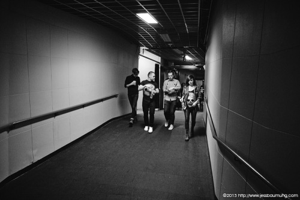

Meet My Little Niece, Fern! Exactly Five Days Older Than My...
Meet my little niece, Fern! Exactly five days older than my little Rocket, she is already one of the most beautifully unique people in my life. Fern was born with Apert Syndrome, an incredibly rare and randomly occurring chromosomal anomaly. This caused some of her bones to prematurely form resulting in an uncommonly shaped skull and fused fingers and toes, all aesthetic abnormalities. A multitude of surgeries will take place in her life before she is even in her preteens. Just last week she went in for brain surgery! Despite all of this, she is a perfect, happy little spirit, a total champion. Having Fern in my life has caused me to view the world in a whole new light. I regret every single time I’ve judged a person for their appearance because people are so much more than just skin and bones. Life will be a little harder for this one than most of us, but she is so loved and I can’t wait to see her grow and flourish into a fearless little woman. I urge you to check yourself next time you see someone who looks a little different. #ApertSyndrome
The Lazer Gun On My Tummy Is Now A Sniper Rifle! #ThePerks
The lazer gun on my tummy is now a sniper rifle! #theperks
A few days ago we played what will be out last major show until...
Soundchecking piano, Aaron wondering.
Empty arena view, from Maurie's shoulder eye view.
Glamorous makeup corner.
My rig.
My long time manager and friend, Jian Ghomeshi probably giving me some wise advice. Or just telling me not to eff it up.
Warm ups with Aaron and Adam.
90% of the activity that goes on backstage, phone action.

Headed to stage
Flying, pregnant style.
A few days ago we played what will be our last major show until my baby comes galavanting into the world. And what a way to go out! We played the legendary Air Canada Centre in Toronto opening for Paramore, total blast (even 6 months pregs).
Good friend and smashing photographer Jess Baumung (www.jessbaumung.com) came out to shoot some of the memories, and here are a few of the soundcheck, backstage and show shots.